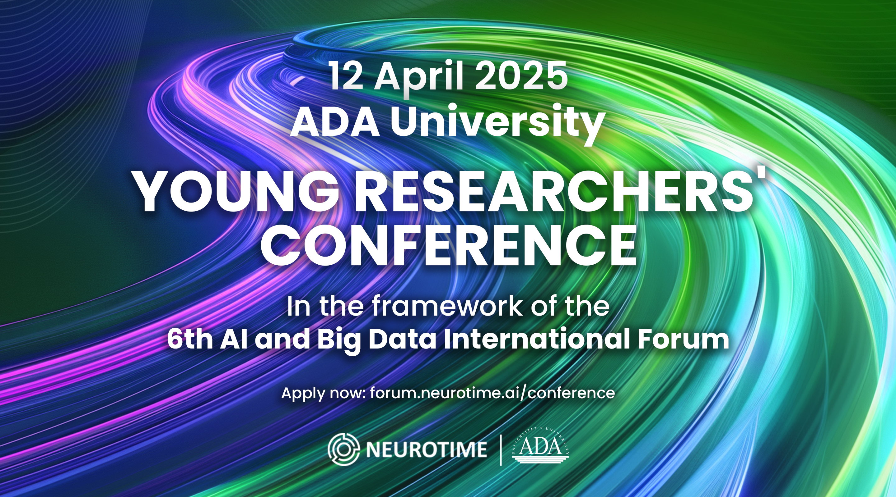
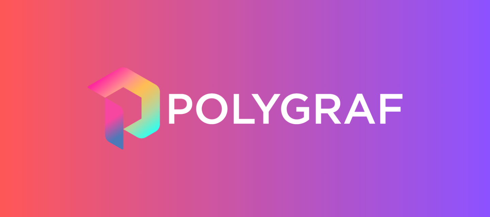

Abdullah Kazimov
I'm a Master's student at the department of computer science at George Washington University, Washington, DC, United States. I work on trustworthy AI, with a focus on privacy-preserving machine learning and multimodal systems. My research aims to build AI systems that preserve sensitive information, evaluate fairness across diverse populations, and create interpretable models for high-stakes applications.
At GWU, I am working under the guidance of Dr. Jamal Hasanov on Multi-Agent Deep Reinforcement Learning for Traffic Signal Optimization. In the past, I have been fortunate to collaborate with Dr. Samir Rustamov at ADA University on BERT-powered news and social media analysis systems.
I am currently working as a Machine Learning Engineer at Polygraf AI, where I develop privacy-preserving machine learning solutions.
Email /
CV /
Github /
LinkedIn
|
|
Research
My research interests include:
- Design AI systems that preserve sensitive information without compromising accuracy
- Evaluate fairness and bias in multimodal AI systems across diverse populations
- Build interpretable models for real-world high-stakes applications
|
News
| Jul. '25 |
Joined GWU CS Software Engineering Lab as a Deep Learning Researcher. |
| Apr. '25 |
Paper has been accepted to YRC-AIBD '25 conference.  |
| Jan. '25 |
Tifosi AI recognized as a top AI startup in Azerbaijan by F6S. |
| Sep. '24 |
Started my Master's program in Computer Science at Geroge Washington University. |
| Sep. '24 |
Joined Polygraf AI as a Machine Learning Engineer. |
| Aug. '24 |
Deployed Nino at the State Border Service of Azerbaijani Republic. |
| May. '24 |
Published the largest Azerbaijani text-based NLP corpus of its time, supporting underrepresented languages, comprising 43M sentences for text summarization and generation - ButaBytes (May 2024). |
| Apr. '24 |
Founded Tifosi AI in Azerbaijan. |
|
Publications
|
|
How Data Mining Algorithms Affect the Interpretability of Machine Learning Models - Comparison with Explainable AI (XAI) Libraries SHAP, LIME and ELI5
Abdullah Kazimov
Under Review, YRC-AIBD '25, April 12, 2025
We analyze how different data mining algorithms impact the interpretability of machine learning models, conducting extensive comparisons with popular XAI libraries to establish best practices for interpretable AI systems in high-stakes applications.
|
|
Education

|
George Washington University
09.2024 - Present
Master of Science in Computer Science
GPA: 3.52 / 4.00
Advisor: Dr. Jamal Hasanov
Thesis Topic: Multi-Agent Deep Reinforcement Learning for Traffic Signal Optimization
|

|
ADA University
09.2020 - 06.2024
Bachelor of Science in Information Technology
GPA: 3.10 / 4.00
Advisor: Dr. Samir Rustamov
Capstone Project: BERT-Powered News and Social Media Analysis System
|
|
Professional Experience
|

|
Machine Learning Engineer
Polygraf AI, Austin, TX
September 2024 - Present
- Achieved 94% weighted F1-score in DLP, outperforming Amazon, Google, and Microsoft solutions
- Developed privacy-preserving LLM workflow, compliant with GDPR, HIPAA, and CCPA standards
- Extended DLP to multimodal data including vision and audio, enabling secure multimodal redaction
|
|
|
Deep Learning Researcher
GWU CS Software Engineering Lab, Washington, DC
July 2025 - August 2025
- Developed a deep reinforcement learning-based multi-agent system, achieving robustness with 98% performance retention and statistical significance at p < 0.02 for traffic signal control
- Demonstrated expertise in 5 peer projects on diverse AI domains, including adversarial ML
|
|
|
Founder
Tifosi AI, Baku, Azerbaijan
April 2024 - March 2025
- Published the largest Azerbaijani text-based NLP corpus of its time, supporting underrepresented languages, comprising 43M sentences for text summarization and generation - ButaBytes (May 2024)
- Built the infrastructure of Nino - media analytics and secure AI system for operational decision-making; deployed at the State Border Service of Azerbaijani Republic
|
|
Teaching
- 2024, Fall CSCI 3509: Introduction to Software Engineering, ADA University
- 2023, Spring CSCI 1202: Programming Principles II, ADA University
|
Honors & Awards
- 2024: State Program on Education of Azerbaijani Youth Abroad Scholarship
- 2023: "Elachi" scholarship winner for academic excellence (among top 100 of 2,500 students)
- 2022: Winner of International Collegiate Programming Contest (ICPC), Azerbaijan Regionals
- 2021: "Dean's List of Distinction" scholarship winner by ADA University
- 2020: High School Graduate with a Gold Medal (Top 0.1% of 90,000, Class of 2020)
- 2019: Bronze medal at Republican Olympiads in Informatics among high school seniors in Azerbaijan
- 2018: Honorable Mention at ICPC, Azerbaijan Regionals as a high school team member
- 2017: Bronze medal at Republican Olympiads in Informatics among high school juniors in Azerbaijan
|
Technologies
Languages: Python, C/C++, SQL, R, Matlab, Java, JavaScript, HTML/CSS
Frameworks: PyTorch, TensorFlow, Keras, FastAPI, Docker, Apache Spark, Apache Hadoop
Cloud Technologies: Google Cloud Platform, Amazon Web Services, Microsoft Azure
Libraries: Hugging Face Transformers, Sentence Transformers, OpenCV, NLTK, SpaCy, Pandas, NumPy, Scikit-learn, Seaborn, Plotly, Matplotlib, Gradio, Streamlit
|
Languages
English (fluent), Turkish (fluent), Azerbaijani (native)
|
|
{kind=link}
{kind=link}